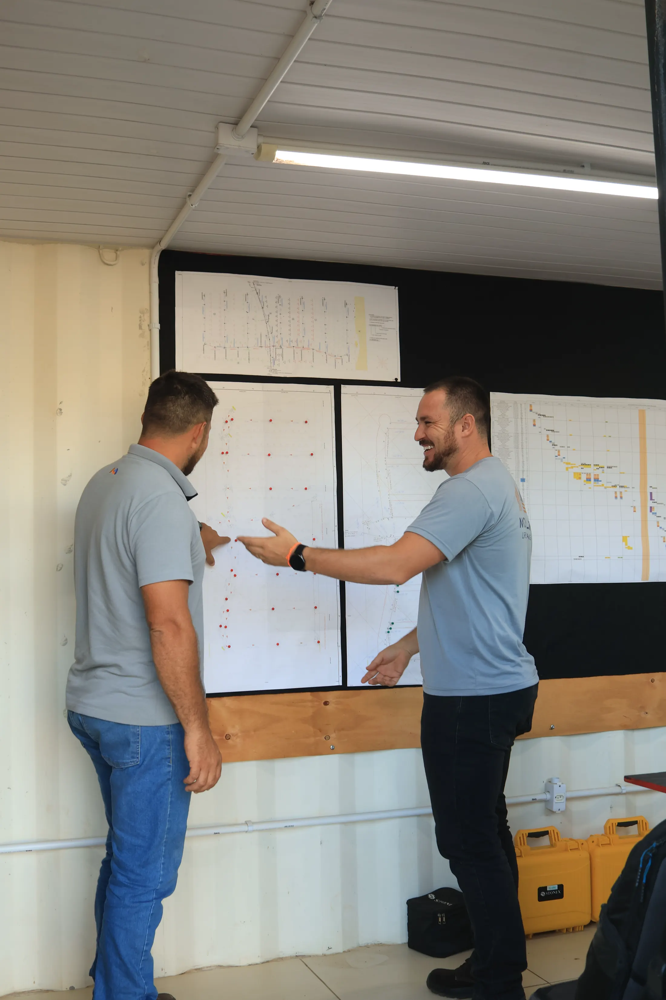
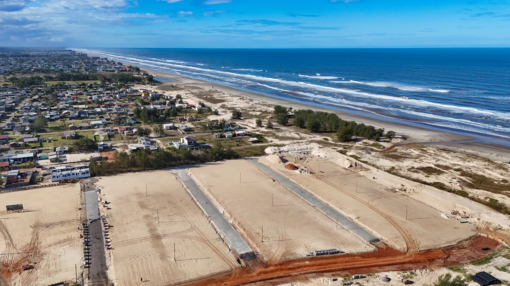
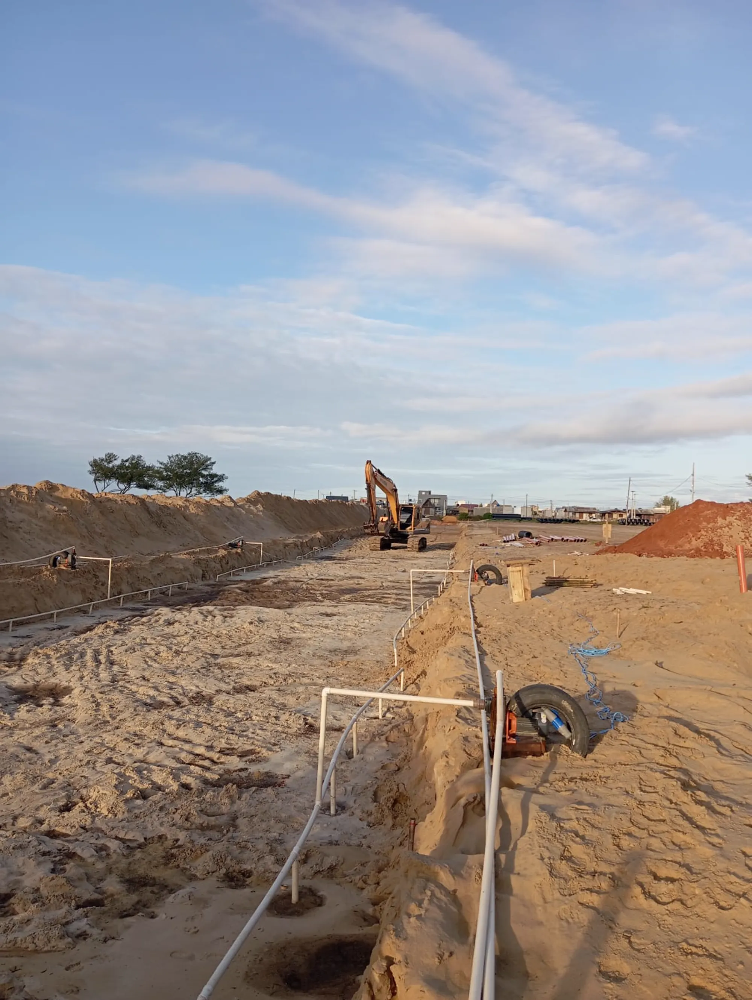
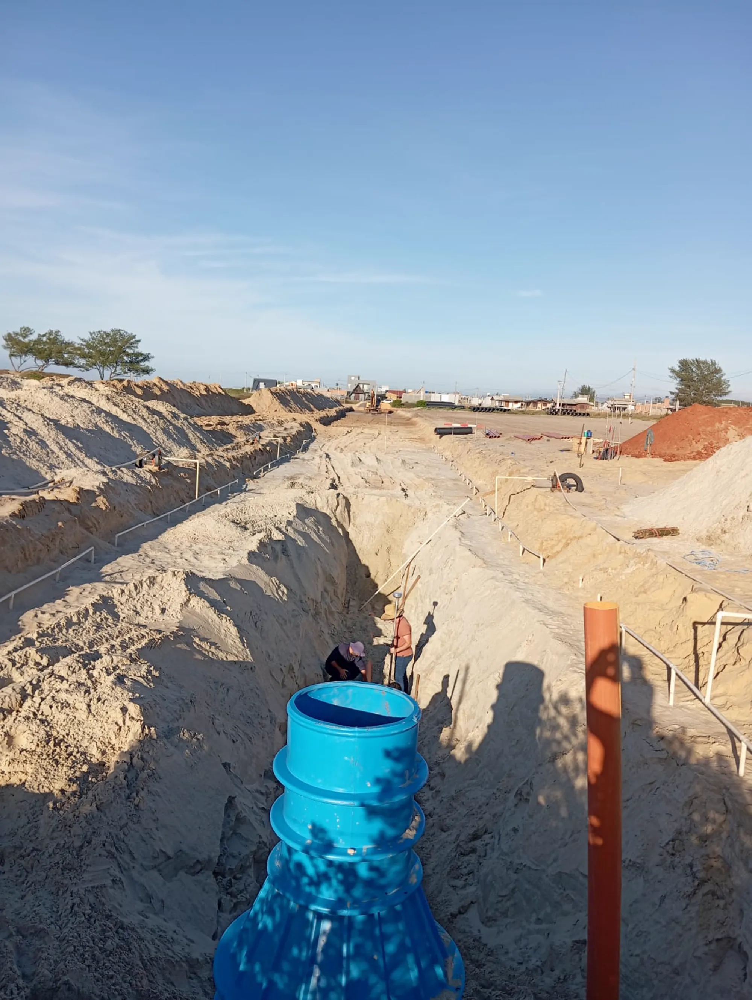
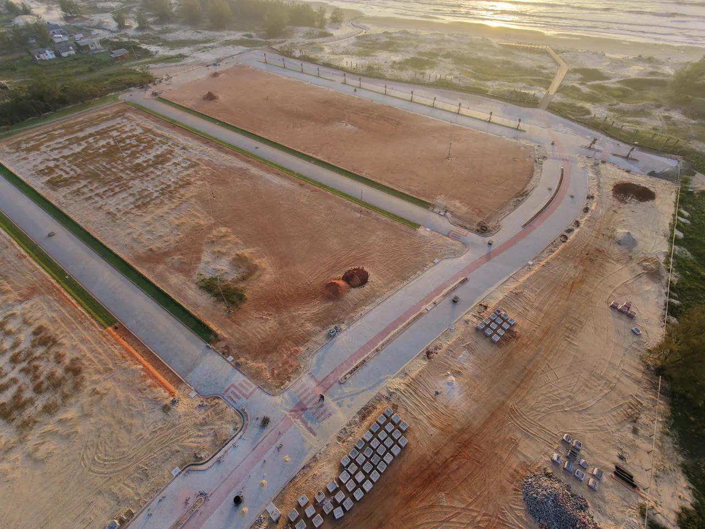
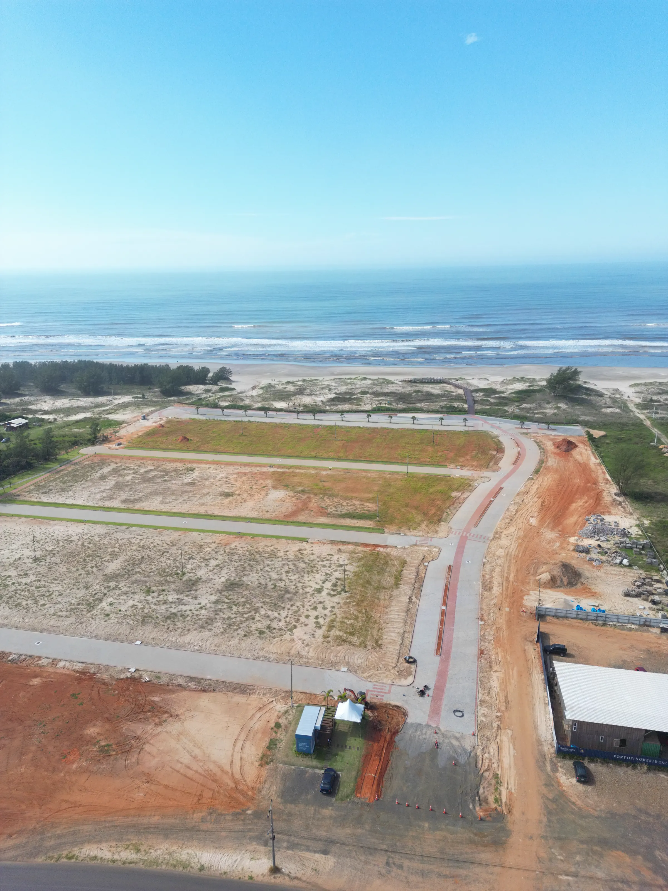

Concepção da área
Análise inicial da área para definir possibilidades, diretrizes e caminhos para o desenvolvimento do empreendimento.
Nossa atuação
Solo, redes, vias e urbanismo. Cada frente dá suporte à próxima e faz o projeto avançar.
Percorra as etapasDo terreno às redes · das vias ao lugar
Engenharia & urbanizaçãoAntes da obra
Antes do início da infraestrutura, estruturamos as decisões que tornam o empreendimento viável, organizado e preparado para avançar.

Planejamento integrado / MonloteAnálise inicial da área para definir possibilidades, diretrizes e caminhos para o desenvolvimento do empreendimento.
Coordenação dos projetos, compatibilização das informações e acompanhamento dos processos necessários para aprovação.
Avaliação das condições de ocupação da área, das exigências legais e da integração do projeto ao contexto urbano.
Definição das soluções técnicas e dos métodos necessários para transformar o projeto em execução.
Análise dos custos e investimentos previstos para orientar as decisões do empreendimento.
Organização das etapas, prazos, recursos e frentes de trabalho que conduzirão a execução da infraestrutura.
Levantamentos e serviços preliminares criam a base técnica para o início das frentes de implantação.

Registro de campo / PortofinoPreparação, movimentação e conformação do solo para receber as etapas seguintes da infraestrutura.

Registro de campo / PortofinoEsgoto, drenagem e abastecimento de água são executados de forma coordenada sob as vias do empreendimento.

Registro de campo / PortofinoCamadas de base, meio-fio e pavimentação formam as vias que organizam os deslocamentos.
Áreas verdes, passeios, praças e sinalização completam a implantação e conectam os espaços.

Registro de campo / Portofino
Da técnica ao território
O Portofino reúne fotografias e vídeos das frentes de infraestrutura registradas em 2025.
Conheça o PortofinoFotografias do acervo Portofino, captadas em 2025. Elas não representam necessariamente o estágio atual da obra.
Vamos conversar
Converse com a equipe sobre as necessidades da sua área.
Avaliar meu projeto